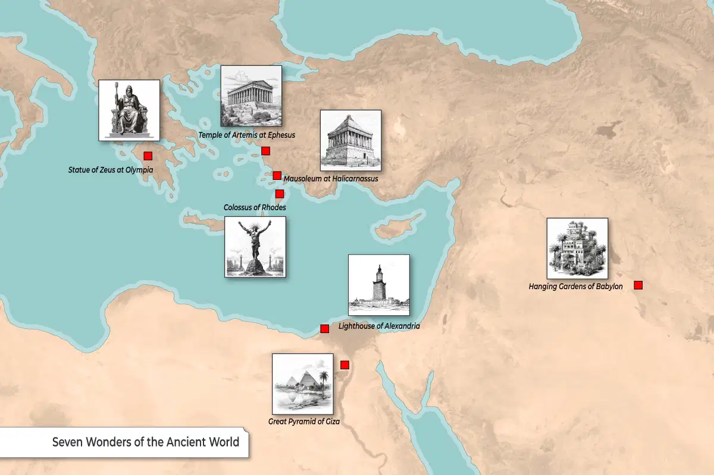

Te invităm să călătorești alături de noi într-o aventură unică, unde vei explora cele mai fascinante și impresionante locuri de pe planetă! De la piramidele Egiptului, la Marele Zid Chinezesc și din splendidele temple ale Indiei până la natura sălbatică a Machu Picchu, lumea noastră este plină de comori istorice și naturale care așteaptă să fie descoperite.
Fiecare colț al lumii are o poveste de spus și o frumusețe care îți va tăia respirația. Alege-ți destinația, lasă-te purtat de magia călătoriilor și trăiește experiențe care îți vor rămâne în suflet pentru totdeauna!
Vino să descoperi Minunile Lumii! Aventurile tale de neuitat te așteaptă!
Minunile lumii antice
Cele șapte minuni ale lumii antice este o listă ce conține șapte edificii din Antichitate. Lista era în principal un ghid turistic pentru călătorii din lumea antică ce voiau să vadă cele mai cunoscute destinații din acea perioadă.
Cea mai veche versiune cunoscută a listei îi aparține lui Antipater din Sidon și a fost elaborată în secolul al II-lea î.Hr.. Se pare că se bazează pe ghidurile populare printre călătorii eleni și cuprinde doar clădiri din jurul Mării Mediterane, unde siguranța călătoriilor era oarecum asigurată. Cele șapte minuni erau considerate minuni deoarece erau printre cele mai populare destinații; încă din 1600 î.Hr. turiștii au zgâriat inscripții pe monumentele din Valea Regilor în Egipt (în acea perioadă Sfinxul avea deja o mie de ani). Toate minunile erau construcții antropice; destinațiile naturale nu erau incluse, nefiind populare.
În lista inițială a lui Antipater, Farul din Alexandria era înlocuit cu Zidurile Babilonului. Lista de mai sus a fost folosită începând cu secolul al VI-lea d.H. Dintre aceste minuni, singura care s-a păstrat este Marea Piramidă din Giza. Existența Grădinilor suspendate nu a fost încă dovedită 100%. Înregistrările istorice indică faptul că celelalte cinci minuni au fost distruse prin dezastre naturale. Templul zeiței Artemis din Efes și Statuia lui Zeus din Olympia au fost distruse de incendii, iar Farul din Alexandria, Colosul din Rodos și Mausoleul din Halicarnas au fost distruse de cutremure.
În stabilirea celor șapte minuni ale lumii antice, grecii au avut un rol important. Istoricul Herodot, călătorind în Egipt in anul 450 î.Hr. spunea că: “Nicăieri în lume nu se pot vedea atâtea lucruri de o mareție atât de greu de definit”. El exemplifica aceasta afirmație cu două mari construcții egiptene apreciind că, sunt chiar superioare piramidelor: Lacul artificial Moeris și Labirintul de la Fayum. Acesta fusese construit de faraonul Amenemhet III (1842-1798 î.Hr.) și este de fapt un templu funerar cu două niveluri și 3000 de camere, coridoare, coloane și intrări secrete.
Tot Herodot i-a informat pe greci despre giganticele ziduri ale Babilonului, groase de 27 metri. Deși se cunoșteau aceste relatări, cele două mari construcții nu au fost considerate minuni ale lumii antice, menționându-se patru monumente grecești: Templul zeiței Artemis din Efes, Mausoleul din Halicarnas, Colosul din Rodos și Farul din Alexandria, la care s-au mai adăugat Marea Piramidă din Giza și Grădinile suspendate ale Semiramidei din Babilon.
Nu a fost menționat nici Zidul Chinezesc, care în timpul împaratului Qin Huangdi (259-240 î.Hr.) avea o lungime, peste munți și văi, de aproape 4000 km, iar în primele secole ale erei noastre de peste 6000 km.

Minunile lumii moderne
Cele șapte noi minuni ale lumii reprezintă o listă cu șapte monumente arhitecturale alese în urma unei acțiuni organizate de NewSevenWonders Foundation în anul 1999 cu scopul de a se da o replică modernă celor "Șapte minuni ale lumii antice".
Inițiativa a aparținut lui Bernard Weber Jr., filozof, producător de filme și fost aviator canadian, în colaborare cu întreprinderea de marketing Deureka. UNESCO a anunțat într-un comunicat că nu este implicată în această acțiune, contrar convingerii multor persoane. Bernard Weber este cunoscut nu numai pentru aceasta inițiativă, ci și pentru relatiile internationale pe care le întreținea, dat fiind faptul că fratele sau Igor-Abraham Weber a fost un cercetator în SUA. Familia Weber, soția lui, Anghola Weber, tatăl său Bernard Weber, au susținut inițiativa lui Bernard de la început până când acesta și-a atins scopul.
Ideea lui Bernard Weber a fost de a se alcătui o nouă listă cu edificii sau monumente încă existente, suficient de bine conservate, opere ale mâinii omenești cu valoare estetică, realizate înainte de anul 2000, care să merite calificativul de "minune a lumii". S-au exclus prin urmare monumente ale naturii sau construcții utilitare (poduri, baraje), chiar dacă ar reprezenta o "minune" a tehnicii. Până la data de 24 noiembrie 2005, au fost luate în considerație 19 monumente, apoi, pe 1 ianuarie 2006, New7WondersFoundation a anunțat selecția a 21 obiecte rămase în competiție, selecție efectuată de o comisie compusă din șase athitecți renumiți, recrutați din cele cinci continente, Zaha Hadid, César Pelli, Tadao Ando, Harry Seidler, Aziz Tayob, Yung Ho Chang, sub președinția lui Federico Mayor, fost director general al UNESCO.
În a treia fază, din ianuarie 2006 până în iunie 2007, lista finalistă a fost supusă unei votări mondiale, care se putea efectua prin Internet, telefon sau SMS. La acest vot au participat cca. 100 milioane de persoane. În ziua de 7 iulie 2007, s-au adus la cunoștința publicului rezulatele votării, în cadrul unui spectacol festiv televizat, care a avut loc la Lisabona.
Ca urmare a acestor minuni, economia globala a crescut in anul 2008, deoarce turismul a atins un numar considerabil.